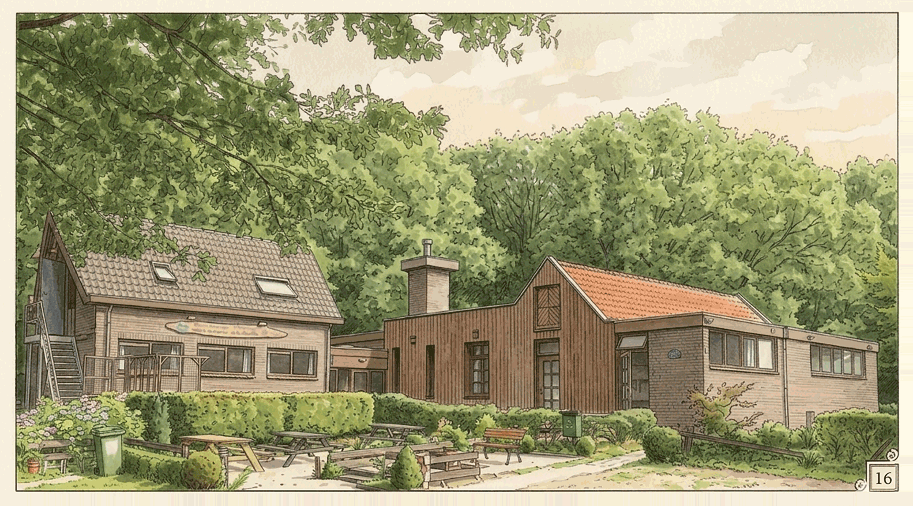
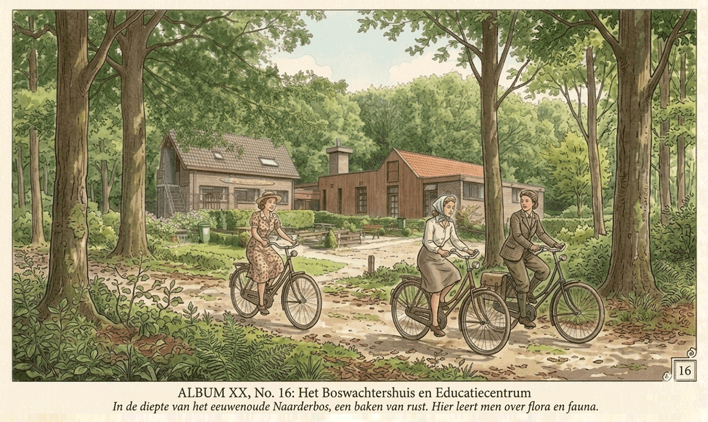
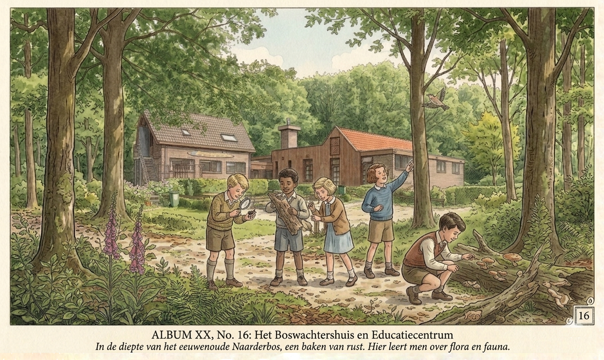
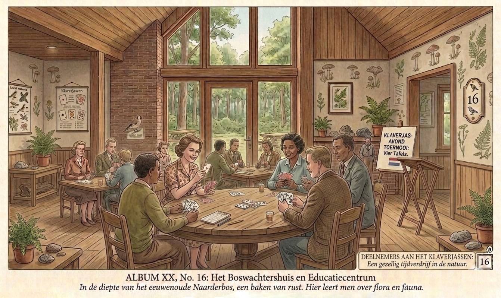
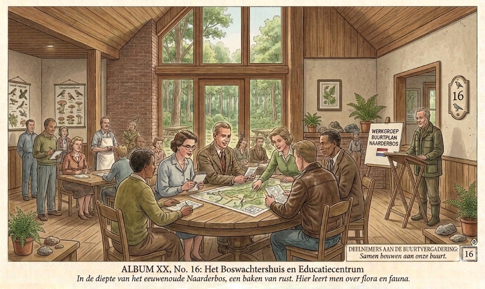

Het Huis

Het BosPraatHuis midden in het Valkeveense bos heeft meerdere eet en creatieve ruimtes en drie volledig uitgeruste keukens die gebruikt kunnen worden worden voor maatschappelijke en culturele activiteiten. In het nieuwe huis zijn tien slaapplaatsen beschikbaar.
De Mogelijkheden
Wilt u zelf activiteiten organiseren? Clubs en verenigingen zitten bij AZ25 in het DNA. Creatieve clubs (schilderen, handvaardigheid, schetsen...), maar bijvoorbeeld ook klaverjassen, bridgen en yoga passen AZ25 als gegoten. We overleggen graag met u, of kom een keer gezellig langs. Het huis is per dagdeel te huur voor bijvoorbeeld lezingen of clubs of bijvoorbeeld ...
-
Fietsen

Wanneer u de IJsselmeerroute fietst en van plan bent om te overnachten in de buurt van Huizen of Naarden dan wacht AZ25 op u met een slaapkamer en een verfrissende douche.
-
Kinderen

Uw school of vereniging wil de beginnende mens laten rennen in of ruiken aan het bos. De start hiervoor zou na een beker chocolademelk bij AZ25 kunnen zijn.
-
Clubs & Verenigingen

Maak ook de ouders zijn van harte welkom bij AZ25. Bijvoorbeeld wekelijks verzamelen bij een kop koffie/thee en daarna samen het bos verkennen, of om de week een mindfull yoga-sessie, of elke donderdagmiddag klaverjassen, of...
-
Uw buurt

Uw straat wil de gemeente overtuigen van een publiekvriendelijke voorziening maar dat vereist gedegen buurtoverleg. U bent met meer dan 20 enthousiaste buren maar uw woonkamer is te klein. AZ25 geeft plaats aan maximaal 50 man/vrouw.
Het Huis Huren
Het Praathuis is per dagdeel te huur.
Verhuur Dagdelen
- 9.00 - 12.45 uur
- 13.00 - 17.00 uur
- 19.00 - 23.00 uur
Prijs per Uur
50,00 euro* inclusief energie, water en schoonmaakkosten.
* voor verenigingen en organisaties nader overeen te komen.
Contact
Adres
Oud Huizerweg 16
1411 GZ Naarden
✆ 035 52 514 59
Secretariaat
Trompenburgstraat 101 1e
1079 TS Amsterdam
✆ 020 644 93 83
Beheer
Weet dat de stichting AZ25 geen enkel winstoogmerk heeft, dan alleen de winst van het moment om met elkaar te wandelen, creatief bezig te zijn en te genieten van het woord van een ander.
© Stichting AZ25